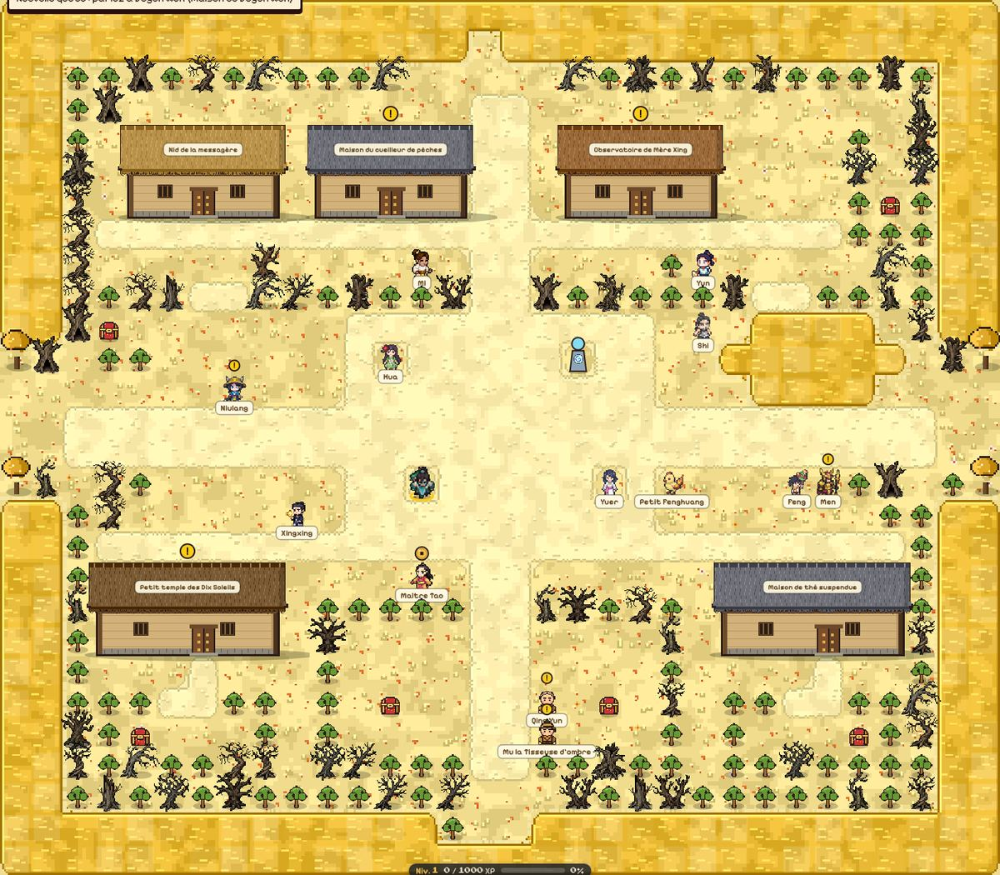
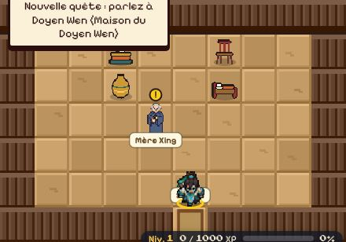
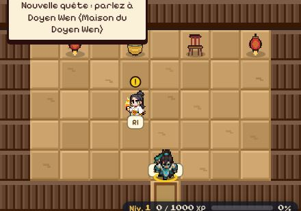

La Grue (Messagère de la Reine Mère) — Nid de la messagère (partie nord de l’écran) Itinéraire depuis le village : Terrasses de Fusang-le-Bas → Nid de la messagère
Objectifs
Vaincre : Abattre le Soleil Lâche sans toucher au Dixième Soleil (sanctuaire de la Cime du Fusang, au nord-est) Lieu : Cime du Fusang (partie est de l’écran) — itinéraire : Terrasses de Fusang-le-Bas → Racines et Branches Dorées → Cime du Fusang
Soleil Lâche — niveau 45, ne réapparaît pas, immobile (sentinelle)
Lieu : Cime du Fusang (partie est de l’écran)
Espèce : Soleil Lâche (Soleil) — Force : Feu (rouge) — Faiblesse : Eau (bleu) — très robuste, frappe fort, carapace épaisse, lanceur de sorts
Récompense
540 pièces d’or · 25470 points d’expérience · composant de flèche : Éclat du Soleil Lâche
Où chercher
1
Nid de la messagère : 1 La Grue (donne la quête) (cliquer pour agrandir)
1
Cime du Fusang : 1 Soleil Lâche (objectif) (cliquer pour agrandir)
La Grue (Messagère de la Reine Mère) — Nid de la messagère (partie nord de l’écran) Itinéraire depuis le village : Terrasses de Fusang-le-Bas → Nid de la messagère
Objectifs
Vaincre : Prouver votre courage à Changxi, mère des douze lunes (Autel de Mazu, au bout des Hautes-Eaux) Lieu : Autel de Mazu (partie est de l’écran)
Changxi, mère des douze lunes — niveau 41, ne réapparaît pas, immobile (sentinelle)
Lieu : Autel de Mazu (partie est de l’écran)
Espèce : Changxi (Divinité) — Force : Eau (bleu) — Faiblesse : Terre (vert) — très robuste, carapace épaisse, lanceur de sorts
Récompense
600 pièces d’or · 25470 points d’expérience · composant de flèche : Larme de Changxi
Où chercher
1
Nid de la messagère : 1 La Grue (donne la quête) (cliquer pour agrandir)
1
Autel de Mazu : 1 Changxi, mère des douze lunes (objectif) (cliquer pour agrandir)
La Grue (Messagère de la Reine Mère) — Nid de la messagère (partie nord de l’écran) Itinéraire depuis le village : Terrasses de Fusang-le-Bas → Nid de la messagère
Objectifs
Vaincre : Affronter Fengmeng au sommet du Pic de la Lune (duel en deux phases, à l'est du Fusang) Lieu : Pic de la Lune (partie nord-est de l’écran)
Fengmeng, Rage et Désespoir — niveau 48, ne réapparaît pas, immobile (sentinelle)
Lieu : Pic de la Lune (partie nord-est de l’écran)
Espèce : Fengmeng, Rage et Désespoir (Humain) — Force : Air (jaune) — Faiblesse : Feu (rouge) — très robuste, carapace épaisse, défenseur
Récompense
600 pièces d’or · 25470 points d’expérience · composant de flèche : Carquois de Fengmeng
Où chercher
1
Nid de la messagère : 1 La Grue (donne la quête) (cliquer pour agrandir)
1
Pic de la Lune : 1 Fengmeng, Rage et Désespoir (objectif) (cliquer pour agrandir)
La Grue (Messagère de la Reine Mère) — Nid de la messagère (partie nord de l’écran) Itinéraire depuis le village : Terrasses de Fusang-le-Bas → Nid de la messagère
Objectifs
Ouvrir : Rapporter les plumes du nid de grue (coin nord-ouest du Fusang, derrière le pavillon) Lieu : Cime du Fusang (partie nord-ouest de l’écran) — itinéraire : Terrasses de Fusang-le-Bas → Racines et Branches Dorées → Cime du Fusang
Récompense
70 pièces d’or · 10610 points d’expérience · composant de flèche : Plume de grue
Où chercher
1
Nid de la messagère : 1 La Grue (donne la quête) (cliquer pour agrandir)
1
Cime du Fusang : 1 Nid de la grue (objectif) (cliquer pour agrandir)
Le fil d'ombre StuffTerrasses de Fusang-le-Bas
Prérequis
Aucun, disponible dès l’arrivée.
Donneur
Mu la Tisseuse d'ombre (Fileuse des racines dorées) — Terrasses de Fusang-le-Bas (partie sud de l’écran)
Objectifs
Ouvrir : Retrouver la relique cachée (Racines et Branches Dorées, dans les terres au sud-est) Lieu : Racines et Branches Dorées (partie sud de l’écran) — itinéraire : Terrasses de Fusang-le-Bas → Racines et Branches Dorées
Vaincre : Abattre le mini-boss : Veilleur de l'ombre dorée (Racines et Branches Dorées) Lieu : Racines et Branches Dorées (au centre de l’écran) — itinéraire : Terrasses de Fusang-le-Bas → Racines et Branches Dorées
Veilleur de l'ombre dorée — niveau du héros +3, ne réapparaît pas, immobile (sentinelle)
Lieu : Racines et Branches Dorées (au centre de l’écran)
Espèce : Lei Gong (Esprit) — Force : Air (jaune) — Faiblesse : Feu (rouge) — très robuste, carapace épaisse, défenseur
Récompense
188 pièces d’or · 10610 points d’expérience · Collier du voile d'ombre (stuff d’exception) · composant de flèche : Collier du voile d'ombre
Où chercher

1
Terrasses de Fusang-le-Bas : 1 Mu la Tisseuse d'ombre (donne la quête) (cliquer pour agrandir)
12
Racines et Branches Dorées : 1 Fil d'ombre (objectif) · 2 Veilleur de l'ombre dorée (objectif) (cliquer pour agrandir)
La tempête de l'Est ✦ Quête secondaire (légende) — Terrasses de Fusang-le-Bas
Prérequis
Aucun, disponible dès l’arrivée.
Donneur
Qing Yun (Moine des terrasses) — Terrasses de Fusang-le-Bas (partie sud de l’écran)
Objectifs
Ouvrir : Retrouver la relique du Gardien (Racines et Branches Dorées, dans les terres au sud-est) Lieu : Racines et Branches Dorées (au centre de l’écran) — itinéraire : Terrasses de Fusang-le-Bas → Racines et Branches Dorées
Vaincre : Affronter le Gardien Céleste : Qinglong, le Dragon d'Azur (Racines et Branches Dorées) Lieu : Racines et Branches Dorées (partie sud de l’écran) — itinéraire : Terrasses de Fusang-le-Bas → Racines et Branches Dorées
Qinglong, le Dragon d'Azur — niveau 43, ne réapparaît pas, immobile (sentinelle)
Lieu : Racines et Branches Dorées (partie sud de l’écran)
Espèce : Qinglong (Dragon) — Force : Terre (vert) — Faiblesse : Air (jaune) — très robuste, frappe fort, carapace épaisse, lanceur de sorts
Terrasses de Fusang-le-Bas : 1 Qing Yun (donne la quête) (cliquer pour agrandir)
12
Racines et Branches Dorées : 1 Perle d'azur (objectif) · 2 Qinglong, le Dragon d'Azur (objectif) (cliquer pour agrandir)
Le sceau des racines Cime du Fusang
Prérequis
Aucun, disponible dès l’arrivée.
Donneur
Mère Xing (Astronome de l'arbre) — Observatoire de Mère Xing (au centre de l’écran) Itinéraire depuis le village : Terrasses de Fusang-le-Bas → Observatoire de Mère Xing
Objectifs
Ouvrir : Retrouver le premier éclat du sceau (racines et branches dorées) Lieu : Racines et Branches Dorées (partie ouest de l’écran) — itinéraire : Terrasses de Fusang-le-Bas → Racines et Branches Dorées
Ouvrir : Retrouver le deuxième éclat du sceau (racines et branches dorées) Lieu : Racines et Branches Dorées (au centre de l’écran) — itinéraire : Terrasses de Fusang-le-Bas → Racines et Branches Dorées
Ouvrir : Retrouver le troisième éclat du sceau (racines et branches dorées) Lieu : Racines et Branches Dorées (partie nord-est de l’écran) — itinéraire : Terrasses de Fusang-le-Bas → Racines et Branches Dorées
Récompense
195 pièces d’or · 10610 points d’expérience · composant de flèche : Éclat de jade céleste
Où chercher

1
Observatoire de Mère Xing : 1 Mère Xing (donne la quête) (cliquer pour agrandir)
123
Racines et Branches Dorées : 1 Premier éclat du sceau (objectif) · 2 Deuxième éclat du sceau (objectif) · 3 Troisième éclat du sceau (objectif) (cliquer pour agrandir)
Les neuf lanternes Cime du Fusang
Prérequis
Aucun, disponible dès l’arrivée.
Donneur
Ri (Acolyte aux neuf lanternes) — Petit temple des Dix Soleils (au centre de l’écran) Itinéraire depuis le village : Terrasses de Fusang-le-Bas → Petit temple des Dix Soleils
Objectifs
Parler à : Écouter la Racine-Ancienne (racines et branches dorées) Lieu : Racines et Branches Dorées (partie ouest de l’écran) — itinéraire : Terrasses de Fusang-le-Bas → Racines et Branches Dorées
Parler à : Parler à Yuer, la fillette qui écoute les soleils (terrasses de Fusang-le-Bas) Lieu : Terrasses de Fusang-le-Bas (au centre de l’écran)
Récompense
200 pièces d’or · 10610 points d’expérience · composant de flèche : Cendre de lanterne
Où chercher

1
Petit temple des Dix Soleils : 1 Ri (donne la quête) (cliquer pour agrandir)
1
Racines et Branches Dorées : 1 Racine-Ancienne (objectif) (cliquer pour agrandir)
1
Terrasses de Fusang-le-Bas : 1 Yuer (objectif) (cliquer pour agrandir)
Yuer (Fillette qui écoute les soleils) — Terrasses de Fusang-le-Bas (au centre de l’écran)
Objectifs
Vaincre : Calmer l'immortel de jade égaré (racines et branches dorées) Lieu : Racines et Branches Dorées (partie est de l’écran) — itinéraire : Terrasses de Fusang-le-Bas → Racines et Branches Dorées
Immortel de jade égaré — niveau du héros +0, ne réapparaît pas, immobile (sentinelle)
Lieu : Racines et Branches Dorées (partie est de l’écran)
Espèce : Immortel de Jade (Esprit de pierre) — Force : Terre (vert) — Faiblesse : Air (jaune) — lanceur de sorts
Terrasses de Fusang-le-Bas : 1 Yuer (donne la quête) (cliquer pour agrandir)
1
Racines et Branches Dorées : 1 Immortel de jade égaré (objectif) (cliquer pour agrandir)
Le message du bouvier Cime du Fusang
Prérequis
Aucun, disponible dès l’arrivée.
Donneur
Niulang (Bouvier de la rive) — Terrasses de Fusang-le-Bas (partie ouest de l’écran)
Objectifs
Parler à : Remettre le mot à Zhinü (Perchoir des Grues) Lieu : Perchoir des Grues (partie ouest de l’écran) — itinéraire : Terrasses de Fusang-le-Bas → Racines et Branches Dorées → Perchoir des Grues
Zhinü (Tisseuse des nuages) — Perchoir des Grues (partie ouest de l’écran) Itinéraire depuis le village : Terrasses de Fusang-le-Bas → Racines et Branches Dorées → Perchoir des Grues
Objectifs
Ouvrir : Récupérer les pêches séchées dans la cache (racines et branches dorées) Lieu : Racines et Branches Dorées (partie ouest de l’écran) — itinéraire : Terrasses de Fusang-le-Bas → Racines et Branches Dorées
Parler à : Porter les pêches à Niulang (place de Fusang-le-Bas) Lieu : Terrasses de Fusang-le-Bas (partie ouest de l’écran)
Récompense
200 pièces d’or · 10610 points d’expérience · composant de flèche : Noyau de pêche
Où chercher
1
Perchoir des Grues : 1 Zhinü (donne la quête) (cliquer pour agrandir)
1
Racines et Branches Dorées : 1 Cache de pêches (objectif) (cliquer pour agrandir)
1
Terrasses de Fusang-le-Bas : 1 Niulang (objectif) (cliquer pour agrandir)
Men (Portier du sceau) — Terrasses de Fusang-le-Bas (partie est de l’écran)
À rapporter à
Zhinü — Perchoir des Grues (partie ouest de l’écran)
Objectifs
Se rendre à : Gagner les racines et branches dorées Lieu : Racines et Branches Dorées — itinéraire : Terrasses de Fusang-le-Bas → Racines et Branches Dorées
Parler à : Demander un permis de pont à Men (place de Fusang-le-Bas) Lieu : Terrasses de Fusang-le-Bas (partie est de l’écran)
Récompense
200 pièces d’or · 10610 points d’expérience · composant de flèche : Plume de pie
Où chercher
12
Terrasses de Fusang-le-Bas : 1 Men (donne la quête) · 2 Men (objectif) (cliquer pour agrandir)
1
Perchoir des Grues : 1 Zhinü (à qui la rendre) (cliquer pour agrandir)
Les voleurs de pêches Cime du Fusang
Prérequis
Aucun, disponible dès l’arrivée.
Donneur
Tao (Cueilleur de pêches) — Maison du cueilleur de pêches (partie nord de l’écran) Itinéraire depuis le village : Terrasses de Fusang-le-Bas → Maison du cueilleur de pêches
Objectifs
Vaincre le groupe : Chasser les singes-démons voleurs (racines et branches dorées) Lieu : Racines et Branches Dorées (partie ouest de l’écran)
Maison du cueilleur de pêches : 1 Tao (donne la quête) (cliquer pour agrandir)
12
Racines et Branches Dorées : 1 Singe-démon voleur (objectif) · 2 Singe-démon voleur (objectif) (cliquer pour agrandir)
Le parfum du matin Cime du Fusang
Prérequis
Aucun, disponible dès l’arrivée.
Donneur
Lanxiang (Faiseuse d'encens) — Atelier d'encens de Lanxiang (partie nord de l’écran) Itinéraire depuis le village : Terrasses de Fusang-le-Bas → Racines et Branches Dorées → Perchoir des Grues → Atelier d'encens de Lanxiang
Objectifs
Parler à : Consulter la Racine-Ancienne (racines et branches dorées) Lieu : Racines et Branches Dorées (partie ouest de l’écran) — itinéraire : Terrasses de Fusang-le-Bas → Racines et Branches Dorées
Parler à : Consulter Petit Fenghuang (place de Fusang-le-Bas) Lieu : Terrasses de Fusang-le-Bas (au centre de l’écran)
Parler à : Consulter Mère Xing (Observatoire de Mère Xing) Lieu : Observatoire de Mère Xing (au centre de l’écran) — itinéraire : Terrasses de Fusang-le-Bas → Observatoire de Mère Xing
Xingxing (Enfant d'étoile) — Terrasses de Fusang-le-Bas (partie ouest de l’écran)
Objectifs
Vaincre : Vaincre le garde solaire des racines (racines et branches dorées) Lieu : Racines et Branches Dorées (partie nord-est de l’écran) — itinéraire : Terrasses de Fusang-le-Bas → Racines et Branches Dorées
Garde solaire des racines — niveau 37, ne réapparaît pas, immobile (sentinelle)
Lieu : Racines et Branches Dorées (partie nord-est de l’écran)
Espèce : Garde Solaire (Humain) — Force : Feu (rouge) — Faiblesse : Eau (bleu) — très robuste, carapace épaisse, défenseur
Terrasses de Fusang-le-Bas : 1 Xingxing (donne la quête) (cliquer pour agrandir)
1
Racines et Branches Dorées : 1 Garde solaire des racines (objectif) (cliquer pour agrandir)
Les écailles de Kun Cime du Fusang
Prérequis
Aucun, disponible dès l’arrivée.
Donneur
Wuya (Pèlerin sans destination) — Perchoir des Grues (au centre de l’écran) Itinéraire depuis le village : Terrasses de Fusang-le-Bas → Racines et Branches Dorées → Perchoir des Grues
Objectifs
Parler à : Demander une écaille à Kun (racines et branches dorées) Lieu : Racines et Branches Dorées (partie sud de l’écran) — itinéraire : Terrasses de Fusang-le-Bas → Racines et Branches Dorées
Ouvrir : Ouvrir le coffre aux écailles de Kun (racines et branches dorées) Lieu : Racines et Branches Dorées (partie sud de l’écran) — itinéraire : Terrasses de Fusang-le-Bas → Racines et Branches Dorées
Récompense
200 pièces d’or · 10610 points d’expérience · composant de flèche : Écaille de Kun
Où chercher
1
Perchoir des Grues : 1 Wuya (donne la quête) (cliquer pour agrandir)
12
Racines et Branches Dorées : 1 Kun (objectif) · 2 Coffre aux écailles de Kun (objectif) (cliquer pour agrandir)
Le long égaré Cime du Fusang
Prérequis
Aucun, disponible dès l’arrivée.
Donneur
Men (Portier du sceau) — Terrasses de Fusang-le-Bas (partie est de l’écran)
Objectifs
Vaincre : Chasser le long de givre égaré (racines et branches dorées) Lieu : Racines et Branches Dorées (au centre de l’écran) — itinéraire : Terrasses de Fusang-le-Bas → Racines et Branches Dorées
Long de givre égaré — niveau du héros +0, ne réapparaît pas, immobile (sentinelle)
Lieu : Racines et Branches Dorées (au centre de l’écran)
Espèce : Canglong de Givre (Long) — Force : Eau (bleu) — Faiblesse : Terre (vert) — très robuste, frappe fort, carapace épaisse, lanceur de sorts
Récompense
200 pièces d’or · 10610 points d’expérience · composant de flèche : Écaille de givre
Où chercher
1
Terrasses de Fusang-le-Bas : 1 Men (donne la quête) (cliquer pour agrandir)
1
Racines et Branches Dorées : 1 Long de givre égaré (objectif) (cliquer pour agrandir)
La Grue (Messagère de la Reine Mère) — Nid de la messagère (partie nord de l’écran) Itinéraire depuis le village : Terrasses de Fusang-le-Bas → Nid de la messagère
Objectifs
Ouvrir : Retrouver la page accrochée (racines et branches dorées) Lieu : Racines et Branches Dorées (partie est de l’écran) — itinéraire : Terrasses de Fusang-le-Bas → Racines et Branches Dorées
Récompense
180 pièces d’or · 10610 points d’expérience · composant de flèche : Page du carnet (IX)
Où chercher
1
Nid de la messagère : 1 La Grue (donne la quête) (cliquer pour agrandir)
1
Racines et Branches Dorées : 1 Page accrochée à une branche (objectif) (cliquer pour agrandir)
Mère Xing (Astronome de l'arbre) — Observatoire de Mère Xing (au centre de l’écran) Itinéraire depuis le village : Terrasses de Fusang-le-Bas → Observatoire de Mère Xing
Objectifs
Parler à : Interroger la Racine-Ancienne sur la mère des soleils (racines et branches dorées) Lieu : Racines et Branches Dorées (partie ouest de l’écran) — itinéraire : Terrasses de Fusang-le-Bas → Racines et Branches Dorées
Parler à : Dire son vrai nom à Hua (village du Fusang) Lieu : Terrasses de Fusang-le-Bas (au centre de l’écran)
 1
1 1
1